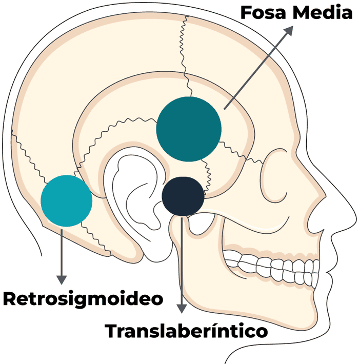

Póster completo
Este es el póster tal como lo presentamos. Si no se ve bien en tu celular, ábrelo en pantalla completa.
Histología
Así se ve el schwannoma vestibular al microscopio. Toca una imagen para verla en grande.
Imagenología
Resonancias y otros estudios de imagen donde se ve el tumor. Toca una imagen para verla en grande.
Información complementaria
En el schwannoma vestibular no hay abordaje perfecto, solo el adecuado para cada tumor.
En corto
Revisamos las revisiones sistemáticas más grandes (1,000 pacientes o más) publicadas de 2021 a noviembre de 2026 sobre los resultados de la cirugía. Incluimos 5.
- La fístula de LCR fue igual con los tres abordajes. R1, R2
- El retrosigmoideo tuvo casi 5 veces más hidrocefalia que el translaberíntico, y la fosa media 3 veces más infección de la herida que el retrosigmoideo. R1
- El translaberíntico redujo la estancia 1.2 días y, en R2, tuvo mejor función facial; R1 no encontró diferencia en la parálisis facial tardía. R1, R2
- La audición útil fue parecida con fosa media y con retrosigmoideo, pero con muy pocos datos (2 estudios, 116 pacientes). R1
- La parálisis facial tardía no dependió del abordaje y casi siempre se recupera. R3, R4
- La experiencia del cirujano mejora la función facial. R5
El tumor
¿Qué es?
Es un tumor benigno de las células de Schwann del VIII par craneal [1] y el más frecuente del ángulo pontocerebeloso [5]. Antes se le llamaba neuroma acústico, pero el nombre es impreciso: no nace de neuronas, sino de células de Schwann, y casi siempre de la porción vestibular del nervio, no de la coclear. Puedes ver cómo se ve en una resonancia en la pestaña Imagenología.
¿Por qué crece?
La mayoría se explica por la pérdida de las dos copias funcionales del gen NF2 (22q12), que codifica la merlina, una proteína supresora de tumores; sin ella, las células de Schwann proliferan sin freno [2]. Cuando la mutación se hereda aparece la neurofibromatosis tipo 2, cuyo sello son los schwannomas vestibulares de ambos lados [2]. Nuestro trabajo solo incluye los esporádicos.
¿Cómo se presenta?
En una serie de 1,000 schwannomas operados, estos fueron los nervios con síntomas [4]:
La hipoacusia se arrastraba en promedio 3.7 años antes del diagnóstico, y en 3% la sordera llegó de golpe. La inestabilidad suele ir y venir. Los síntomas del trigémino aparecen sobre todo en tumores grandes que ya comprimen el tronco encefálico [4].
¿Por qué se pierde la audición?
No es solo la compresión del nervio coclear dentro del conducto auditivo interno. En un estudio de laboratorio, las sustancias que secretan estos tumores dañaron cultivos de cóclea de ratón, y el daño fue mayor con los tumores de pacientes que oían peor; una de las moléculas tóxicas fue el TNF-α [5].
¿Cómo se diagnostica y se trata?
El diagnóstico se hace con resonancia magnética y no siempre hace falta biopsia. Las opciones son observar, radiocirugía, radioterapia fraccionada o cirugía; se elige según los síntomas, el tamaño del tumor y la experiencia del centro. En tumores pequeños se pondera observar contra radiocirugía; en los grandes, la cirugía es obligatoria [1]. Nuestro trabajo se centra en la cirugía.
¿Sabías que…?
- Se suele decir que afecta a 1 de cada 100,000 personas, pero los estudios recientes reportan de 3.0 a 5.2 casos por 100,000 personas al año, y hasta 20.6 en personas de 70 años o más. Probablemente más de 1 de cada 500 personas lo desarrolla en algún momento de su vida [3].
- Aunque el tumor crece pegado al nervio facial, solo 6% tenía síntomas faciales [4].
- Quedarse sordo no quita el acúfeno: seguía en 46% de los pacientes que ya estaban sordos antes de la cirugía [4].
Los tres abordajes

Retrosigmoideo (RS)
- Entrada
- Detrás del seno sigmoideo.
- Audición
- Se puede intentar conservar.
- Se usa para
- Tumores que salen al ángulo pontocerebeloso. R1
- Ojo
- Más hidrocefalia que el translaberíntico. R1
Translaberíntico (TL)
- Entrada
- A través de la mastoides y el laberinto.
- Audición
- Se sacrifica, porque se abre el laberinto.
- Se usa para
- Tumores de cualquier tamaño cuando ya no hay audición útil.
- A favor
- Menos hidrocefalia que el retrosigmoideo y 1.2 días menos de hospital. R1, R2
Fosa media (FM)
- Entrada
- Por encima del oído, a través del hueso temporal.
- Audición
- Se puede intentar conservar.
- Se usa para
- Tumores pequeños, dentro del conducto auditivo interno. R1
- Ojo
- Más infección de la herida que el retrosigmoideo. R1
¿Cómo se elige?
Algoritmo simplificado que propusimos a partir de [1] y R1–R2 (Figura 4 del póster). Es orientativo: en la práctica también pesan los síntomas, el tamaño del tumor y la experiencia del centro [1].
Qué encontramos
Cada abordaje comparado contra el retrosigmoideo. Aquí agregamos las cifras que no cupieron en el póster.
| Desenlace | Translaberíntico vs RS | Fosa media vs RS |
|---|---|---|
| Función facial | Mejor con TL · R2House-Brackmann IV o mejor: OR 0.30 (IC 95% 0.10–0.89). R1 no vio diferencia en la parálisis tardía: RR 0.91 (0.77–1.07). |
Sin diferencia · R1RR 0.98 (0.92–1.04) |
| Audición útil | No aplica: el TL sacrifica la audición |
Sin diferencia · R1RR 1.18 (0.76–1.85); solo 2 estudios, 116 pacientes |
| Fístula de LCR | Sin diferencia · R1, R2R1: RR 1.18 (0.92–1.51). R2: 11.4% vs 12.0%, OR 1.03 (0.81–1.32) |
Sin diferencia · R1RR 1.14 (0.70–1.83) |
| Meningitis | Sin diferencia · R2OR 1.05 (0.45–2.43) |
Sin datos |
| Hidrocefalia | 4.8 veces más con RS · R1RR 4.84 (1.96–11.96); 34 de 355 con RS vs 4 de 273 con TL |
Sin datos |
| Infección de la herida | Sin diferencia · R1 |
3.2 veces más con FM · R1RR 3.17 (1.13–8.85) |
| Días de hospital | 1.2 días menos con TL · R2Diferencia de medias −1.20 (−1.39 a −1.01) |
Sin datos |
Ojo con R1: su resumen dice que el retrosigmoideo tuvo menos hidrocefalia, pero sus gráficas de bosque muestran lo contrario. Usamos los datos de las gráficas.
Revisiones incluidas (n = 5)
| Revisión | Tema | Estudios / pacientes | Hallazgo principal |
|---|---|---|---|
| R1 · Garcia-Torrico 2025 | RS vs TL vs FM | 32 / 6,889 | Sin diferencia en audición, función facial tardía ni fístula de LCR. Más hidrocefalia con RS que con TL y más infección de la herida con FM que con RS. |
| R2 · Gibbon 2025 | TL vs RS | 21 / 4,572 | Fístula (11.4% vs 12.0%) y meningitis iguales. Con TL, 1.2 días menos de hospital y mejor función facial. |
| R3 · Zhang 2025 | Parálisis facial tardía: incidencia y factores de riesgo | 27 / 8,656 | 12.3% (IC 95% 9.4–15.1); más en jóvenes y en tumores grandes; no depende del abordaje. |
| R4 · Huppert Steed 2026 | Parálisis facial tardía: frecuencia y pronóstico | 10 / 2,122 | 13% (8–21%); aparece hacia el día 7.5; 85% recupera House-Brackmann I–II en un año; no depende del abordaje. |
| R5 · Deeb 2026 | Curva de aprendizaje del cirujano | 12 / 4,059 casos | Los 11 estudios que midieron la función facial reportaron mejoría con la experiencia; la audición mejoró en 4. |
Cómo hicimos el trabajo
En lugar de leer cientos de estudios sueltos, juntamos los resultados de revisiones sistemáticas que ya los habían analizado (una «revisión de revisiones»), siguiendo la guía PRISMA 2020 [6]. Buscamos en PubMed el 24 y 25 de noviembre de 2026 e incluimos revisiones de 2021 en adelante, de adultos operados de un schwannoma vestibular no tratado antes, con 1,000 pacientes o más. Dejamos fuera las que solo estudiaban radiocirugía u observación.
Búsqueda principal (PubMed)
Búsqueda complementaria (otros métodos)
Total: 5 revisiones incluidas.
Limitaciones
- Solo buscamos en PubMed.
- No conseguimos 4 revisiones completas, y la búsqueda complementaria se limitó a artículos gratuitos.
- La selección la hizo un solo evaluador.
- No evaluamos la calidad de las revisiones con AMSTAR 2 [7].
- El mínimo de 1,000 pacientes es una decisión nuestra.
- Varias revisiones comparten estudios y casi todos son observacionales, así que hay que tomar los resultados con cuidado. Además, cada estudio define la parálisis facial tardía a su manera (R4).
Escalas
Koos: tamaño y extensión del tumor [8]
| Grado | Descripción |
|---|---|
| I | Dentro del conducto auditivo interno (intracanalicular). |
| II | Sale al ángulo pontocerebeloso sin tocar el tronco encefálico. |
| III | Llena la cisterna y toca el tronco sin desplazarlo. |
| IV | Desplaza el tronco y los pares craneales. |
House-Brackmann: función del nervio facial [9]
| Grado | Función facial |
|---|---|
| I | Normal. |
| II | Disfunción leve: debilidad apenas visible; cierra el ojo por completo. |
| III | Moderada: asimetría evidente; cierra el ojo por completo con esfuerzo. |
| IV | Moderadamente grave: asimetría que desfigura; no cierra el ojo por completo. |
| V | Grave: movimiento apenas perceptible. |
| VI | Parálisis total. |
Un buen resultado es House-Brackmann I–II.
AAO-HNS: audición [10]
| Clase | Umbral auditivo | Discriminación de palabras |
|---|---|---|
| A | 30 dB o menos | 70% o más |
| B | Más de 30 y hasta 50 dB | 50% o más |
| C | Más de 50 dB | 50% o más |
| D | Cualquiera | Menos de 50% |
Audición útil = clases A y B.
Glosario
- RS, TL, FM
- Retrosigmoideo, translaberíntico y fosa media.
- LCR
- Líquido cefalorraquídeo. Una fístula de LCR es una fuga por la herida, la nariz o el oído.
- Parálisis facial tardía
- Empeoramiento de la función facial que aparece días después de la cirugía, cuando al terminar estaba mejor. Cada estudio la define un poco distinto (R4).
- RR y OR
- Riesgo relativo y razón de momios. Un RR de 4.84 significa un riesgo 4.84 veces mayor; un valor de 1 significa que no hay diferencia.
- IC 95%
- Intervalo de confianza. Si incluye el 1, la diferencia no es significativa.
- Gráfica de bosque
- La figura de un metaanálisis que muestra el resultado de cada estudio y el combinado.
- Revisión sistemática
- Estudio que busca, selecciona y resume todos los estudios sobre una pregunta siguiendo un método fijo.
- NF2
- Gen de la merlina; también el nombre de la neurofibromatosis tipo 2.
Referencias
Citadas en el póster
- Goldbrunner R, Weller M, Regis J, Lund-Johansen M, Stavrinou P, Reuss D, et al. EANO guideline on the diagnosis and treatment of vestibular schwannoma. Neuro Oncol. 2020;22(1):31-45. doi: 10.1093/neuonc/noz153
- Petrilli AM, Fernández-Valle C. Role of Merlin/NF2 inactivation in tumor biology. Oncogene. 2016;35(5):537-48. doi: 10.1038/onc.2015.125
- Marinelli JP, Beeler CJ, Carlson ML, Caye-Thomasen P, Spear SA, Erbele ID. Global incidence of sporadic vestibular schwannoma: a systematic review. Otolaryngol Head Neck Surg. 2022;167(2):209-14. doi: 10.1177/01945998211042006
Citadas en la información complementaria
- Matthies C, Samii M. Management of 1000 vestibular schwannomas (acoustic neuromas): clinical presentation. Neurosurgery. 1997;40(1):1-9. doi: 10.1097/00006123-199701000-00001
- Dilwali S, Landegger LD, Soares VY, Deschler DG, Stankovic KM. Secreted factors from human vestibular schwannomas can cause cochlear damage. Sci Rep. 2015;5:18599. doi: 10.1038/srep18599
- Page MJ, McKenzie JE, Bossuyt PM, Boutron I, Hoffmann TC, Mulrow CD, et al. The PRISMA 2020 statement: an updated guideline for reporting systematic reviews. BMJ. 2021;372:n71. doi: 10.1136/bmj.n71
- Shea BJ, Reeves BC, Wells G, Thuku M, Hamel C, Moran J, et al. AMSTAR 2: a critical appraisal tool for systematic reviews that include randomised or non-randomised studies of healthcare interventions, or both. BMJ. 2017;358:j4008. doi: 10.1136/bmj.j4008
- Koos WT, Day JD, Matula C, Levy DI. Neurotopographic considerations in the microsurgical treatment of small acoustic neurinomas. J Neurosurg. 1998;88(3):506-12. doi: 10.3171/jns.1998.88.3.0506
- House JW, Brackmann DE. Facial nerve grading system. Otolaryngol Head Neck Surg. 1985;93(2):146-7. doi: 10.1177/019459988509300202
- Committee on Hearing and Equilibrium guidelines for the evaluation of hearing preservation in acoustic neuroma (vestibular schwannoma). Otolaryngol Head Neck Surg. 1995;113(3):179-80. doi: 10.1016/S0194-5998(95)70101-X
Revisiones incluidas
- R1. Garcia-Torrico F, Mendieta CD, De Nigris Vasconcellos F, Salolin Vargas VP, Scalise M, Mamani-Julian K, et al. Evaluating the effectiveness and complications of the retrosigmoid, translabyrinthine and middle fossa approaches in vestibular schwannoma surgical management: a comprehensive systematic review and meta-analysis of 6,889 patients. Neurosurg Rev. 2025;48(1):229. doi: 10.1007/s10143-025-03237-2
- R2. Gibbon FL, Lindner RJ, Vial ADM, da Silva GG, Palavani LB, Semione G, et al. Translabyrinthine versus retrosigmoid approach for vestibular schwannoma: a systematic review and an updated meta-analysis. Otolaryngol Head Neck Surg. 2025;172(3):774-86. doi: 10.1002/ohn.1031
- R3. Zhang X, Wen H, Chen G. Incidence and risk factors of delayed facial paralysis after vestibular schwannoma resection: a systematic review and meta-analysis. World Neurosurg. 2025;197:123938. doi: 10.1016/j.wneu.2025.123938
- R4. Huppert Steed A, Riordan K, Papuc M, Jukic A, Johnson KA, Pico A, et al. Incidence and prognosis of delayed facial nerve palsy after vestibular schwannoma resection: systematic review and meta-analysis. J Neurol Surg B Skull Base. 2026;87(2):123-30. doi: 10.1055/a-2587-6401 · Texto completo gratis
- R5. Deeb JMC, Dowie HJM, Ovenden C, Castle-Kirszbaum M, Chawla S, Schultz M, et al. The effect of a learning curve on outcomes of vestibular schwannoma surgery: a systematic review. Neurosurg Rev. 2026;49(1):342. doi: 10.1007/s10143-026-04256-3 · Texto completo gratis
Declaración de herramientas
Para elaborar el póster y esta página usamos las siguientes páginas y programas. Las imágenes tomadas de otras fuentes llevan su crédito y su licencia.